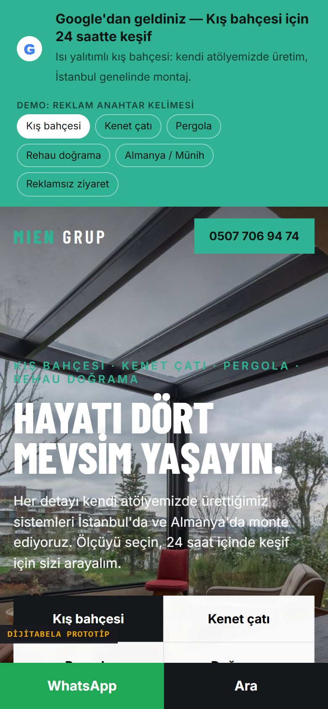
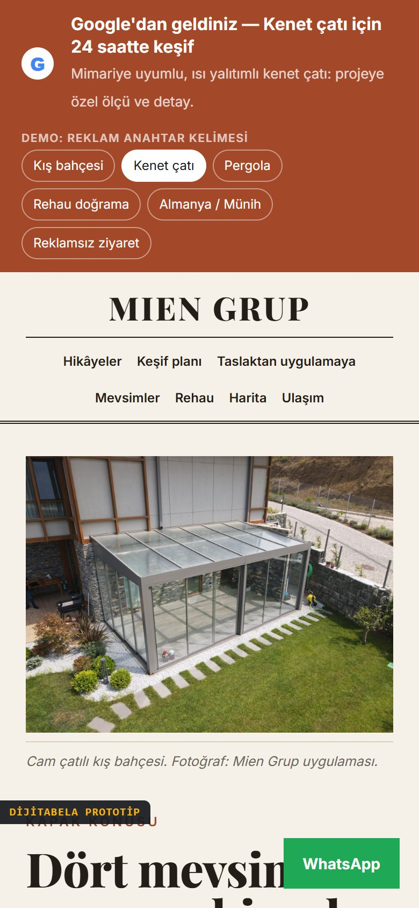
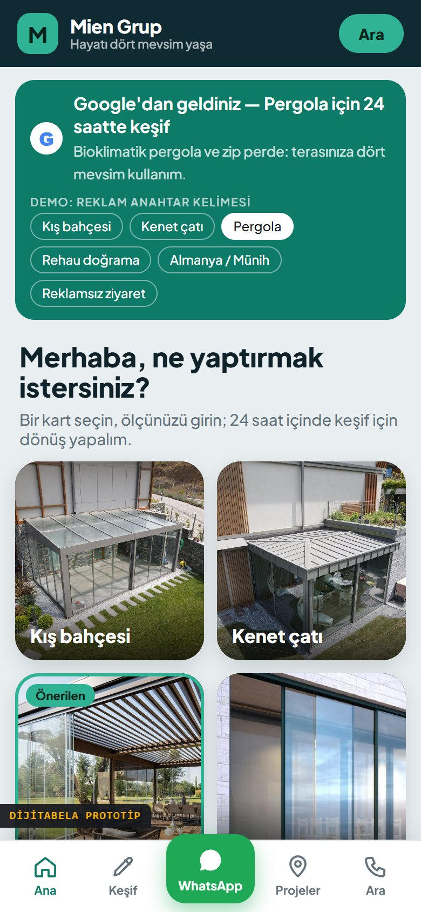
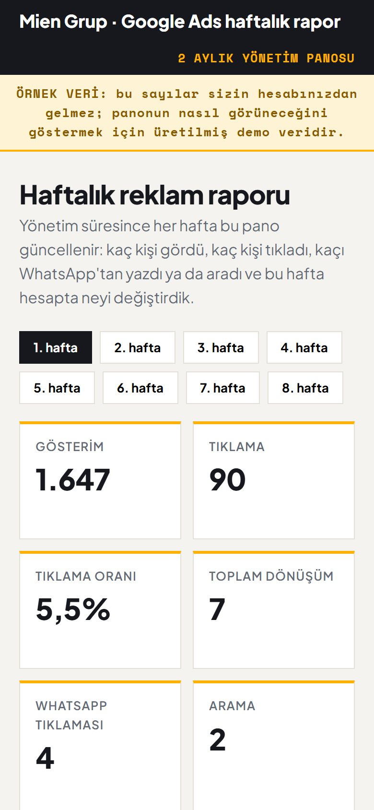

İstediğiniz her şeyi tek pakette topladık: kampanya kurulumu, anahtar kelime ve rakip analizi, site SEO analizi, rutin raporlama ve yönetim. Yazmadan önce herkese açık sayfalarınızı inceledik; bulduklarımız ve yapacaklarımız aşağıda. Üstüne reklamlarınızın gideceği 3 ayrı açılış sayfası ve haftalık rapor panosu hazırladık; hepsi tıklanabilir.
19 Ekim 2026 tarihinde, yalnızca herkese açık sayfa kaynağından ve Instagram gönderilerinden yapıldı. Hesabınıza erişimimiz olmadığı için reklam hesabındaki rakamlara bakmadık; onları erişimle doğrulayacağız.
miengrup.com'u açan herkes kalıcı yönlendirmeyle rehaupencerem.com adresine atılıyor. Marka adınız ile reklamın gideceği adres farklı; güven ve reklam son URL'si açısından dikkat gerektiriyor.
Ana sayfa dahil incelediğimiz her sayfada "noindex, nofollow" yönergesi var. Bu haliyle site, organik aramalarda çıkmak üzere değil gizlenmek üzere ayarlı görünüyor. "İlk sayfa" beklentinizin önündeki ilk engel bu.
Sayfa kodunda Google reklam etiketi ve Tag Manager kapsayıcısı var; ancak kodda bir dönüşüm olayı görünmüyor. İletişim sayfasında form yok, WhatsApp bağlantısı yok; yalnızca telefon bağlantısı var. Tag Manager içi dışarıdan görülemediği için hesaba erişimle doğrulanacak.
Ana sayfada net bir "keşif iste" çağrısı yok; başlıkta yalnızca "RehauPencerem" yazıyor, açıklama (meta) metni tanımlı değil. Sayfada iki ayrı H1 başlığı ve şablondan kalan 3 yer tutucu görsel var. Mobil görünüm uyumlu, sunucu yanıtı hızlı; sorun içerik ve çağrıda.
İletişim sayfasında adres "Örnek, Ney Sk. no:20/b" olarak görünüyor; Mine Sk. No:11/A adresinizden farklı. Projeler sayfasında şablonun örnek projeleri ("House of the Rising Sun" gibi) duruyor. Düşler Vadisi, Münih gibi gerçek projeleriniz sitede hiç geçmiyor, yalnızca Instagram'da var.
Münih'te iş yapmanıza rağmen sitede Almanca hiçbir sayfa yok ve ana sayfada Almanya anılmıyor. Almanya'dan arama yapanlar için ayrı bir karşılama yok.
| Kampanya | Amaç | Bölge | Dönüşüm |
|---|---|---|---|
| 1 · Kış bahçesi | Kış bahçesi, cam çatı ve ısı yalıtımlı sürme sistem arayanlar | İstanbul ilçe bazlı | WhatsApp, arama, keşif formu |
| 2 · Kenet çatı | Kenet çatı ve metal çatı çözümü arayanlar | İstanbul ilçe bazlı | WhatsApp, arama, keşif formu |
| 3 · Pergola | Bioklimatik pergola ve zip perde arayanlar | İstanbul ilçe bazlı | WhatsApp, arama, keşif formu |
| 4 · Rehau doğrama | Rehau PVC ve alüminyum doğrama arayanlar | İstanbul ilçe bazlı | WhatsApp, arama, keşif formu |
| 5 · Almanca (Münih) ekstra | Münih ve çevresinde Almanca kış bahçesi arayanlar | Münih ve çevresi | WhatsApp, e-posta |
Projelerinizin ve ofisinizin bulunduğu bölgelerden başlarız; ilk haftaların sonuçlarına göre bütçeyi çalışan ilçelere kaydırırız.
Aşağıdakiler başlangıç taslağıdır. Aylık arama hacmi ve tıklama maliyeti bu belgede verilmez: hesaba erişimle Anahtar Kelime Planlayıcı'dan çıkarılacak.
Liste her hafta gerçek arama terimleriyle güncellenir.
Başlıklar ve açıklamalar yayından önce Google'ın karakter sınırlarına göre kontrol edilir; gerçek hesapta her kampanya için 15 başlık ve 4 açıklama hazırlanır.
Reklamdan gelen ziyaretçi WhatsApp düğmesine bastığında kayıt altına alınır.
Sayfadaki "Ara" düğmesi ve reklamdaki arama uzantısı ayrı ayrı sayılır.
Açılış sayfasındaki keşif sihirbazının tamamlanması ve mesajın gönderilmesi.
Hangi kampanyanın, hangi aramanın size mesaj getirdiğini görmeden bütçeyi doğru yere kaydıramayız.
Almanca metinler yayından önce ana dili Almanca olan biri tarafından gözden geçirilir.
Reklamdan gelen kişinin indiği sayfa sonucu belirler. Üç sayfanın üçü de sizin adınız, fotoğraflarınız ve gerçek projelerinizle hazırlandı; yalnız renk değil yerleşim de farklı. Her birinde keşif sihirbazı, önce/sonra kaydırıcısı, İstanbul + Münih proje haritası, dört mevsim simülatörü, Rehau karşılaştırıcı, Instagram gönderileri, 360° sokak görünümü ve reklamdan gelene özel kampanya bandı var.

Tam ekran proje fotoğrafı ve hızlı keşif kartı. Karar vermek isteyen için.

Numaralı bölümler, proje hikâyeleri. Güven arayan, araştıran için.

Telefon uygulaması hissi, alt sabit WhatsApp ve Ara menüsü. Mobil reklam için.
Sayfalardaki sayılar, "24 saat" sözü ve yazılar sizin onayınızla kesinleşir. Sihirbaz, harita ve simülatör demo verilidir; Instagram gönderileri ve sokak görünümü çevrimiçi yüklenir.

İki ay boyunca her hafta size şu panoyu veririz: gösterim, tıklama, WhatsApp / arama / form dönüşümü, kampanya bazlı tablo, kullanıcıların yazdığı arama terimleri ve o hafta hesapta yaptığımız optimizasyonların günlüğü.
Örnekteki rakamlar demo veridir ve panoda "örnek veri" diye işaretlidir.
Örnek panoyu aç| ✓ | Hesabın baştan sona düzenlenmesiTeslim: 4 ürün + 1 Almanca kampanya, ilçe hedeflemesi, negatif liste, reklam metinleri, dönüşüm takibi |
| ✓ | Kampanya kurulumuTeslim: kurulum ve ilk yayın; yayına almadan önce sizin onayınız |
| ✓ | Anahtar kelime analiziTeslim: hesaba erişimle Anahtar Kelime Planlayıcı çalışması, gruplanmış kelime listesi |
| ✓ | Rakip analiziTeslim: aynı aramalarda çıkan firmaların mesajları ve açılış sayfaları; fark yaratacak noktalar |
| ✓ | Site SEO analiziTeslim: önceliklendirilmiş bulgu listesi (dizine alma, başlık, açıklama, içerik, hız, yönlendirme) |
| ✓ | Optimizasyon ve 2 ay takipTeslim: haftalık arama terimi taraması, teklif ve bölge ayarı, reklam metni testleri |
| ✓ | Rutin raporlamaTeslim: her hafta pano, ay sonunda değerlendirme toplantısı |
| ✓ | Hesap kontrolü sizdeTeslim: hesap ve fatura sizde, yönetici erişimimiz yazılı olarak sınırlı; durdur / başlat sizin elinizde |
| ~ | İlk sayfada yer almakGaranti vermiyoruz: reklam sırası teklif, kalite ve rekabete göre değişir. Hedefimiz ilgili aramalarda üst sıralarda çıkmak ve ölçerek iyileştirmek. |
Vitrin, dergi, uygulama yerleşimleri. Birini yayına alıyoruz.
Münih için Almanca kelime, negatif ve reklam metni.
WhatsApp, arama ve form olayları tek tek ölçülür.
Her hafta aynı biçimde, sade ve okunur rapor.
Hesaba erişim, dönüşüm takibi kurulumu, site SEO analizi başlangıcı.
Anahtar kelime ve rakip analizi, kampanya yapısı onayı, açılış sayfası yayında.
İlk yayın. Arama terimi taraması, negatif liste güncelleme.
Bölge ve saat ayarı, reklam metni testi, ilk ay raporu.
Çalışan kelimelere odaklanma, zayıf kelimeleri kısma.
Almanca kampanya değerlendirmesi, açılış sayfası iyileştirmesi.
Teklif ve bütçe dağılımı ince ayarı, yeni kelimeler.
İki aylık değerlendirme, sonraki dönem önerisi, hesap sizde.
Hesap düzenleme + dönüşüm takibi kurulumu + 2 ay yönetim.
İki aylık hizmet için kısa, yazılı bir hizmet anlaşması yapılır. İki ay sonunda hesap zaten sizdedir; devam etmek isterseniz aylık yönetim için ayrı konuşuruz, istemezseniz hiçbir yükümlülük kalmaz.
Hesap sizin olduğu için Google Ads'ten istediğiniz an kampanyaları duraklatabilir, tekrar başlatabilirsiniz. Bize haber vermeniz yeterli, ayrıca onay gerekmez.
Her hafta örnekteki pano biçiminde, sade bir özetle: ne kadar harcandı, kaç kişi yazdı veya aradı, bu hafta neyi değiştirdik.
Hesaba erişimle Anahtar Kelime Planlayıcı'dan bölgenizdeki arama hacmi ve tıklama maliyeti tahminini çıkarırız, sonra sizin hedefinize (aylık kaç keşif) göre bir aralık öneririz. İlk haftalarda küçük başlar, çalışan kampanyaya bütçe kaydırırız. Bu belgede rakam vermiyoruz çünkü gerçek veri olmadan tahmin uydurmak istemiyoruz.
Hayır. Reklam sırası teklifinize, reklam ve sayfa kalitesine ve rakiplere göre değişir; böyle bir garanti dürüst olmaz. Yapacağımız şey, doğru aramalarda görünmek ve ölçerek her hafta iyileştirmektir.
Mevcut hesabınıza yönetici erişimi istememiz yeterli; sıfırdan düzenleriz. Kart ve sahiplik hep sizde kalır.
Teklifi onaylarsanız bu mesaja cevap verin: hesap erişimini ve ilk haftanın planını bugün netleştirelim. Önce açılış sayfalarından birini seçmeniz yeterli.